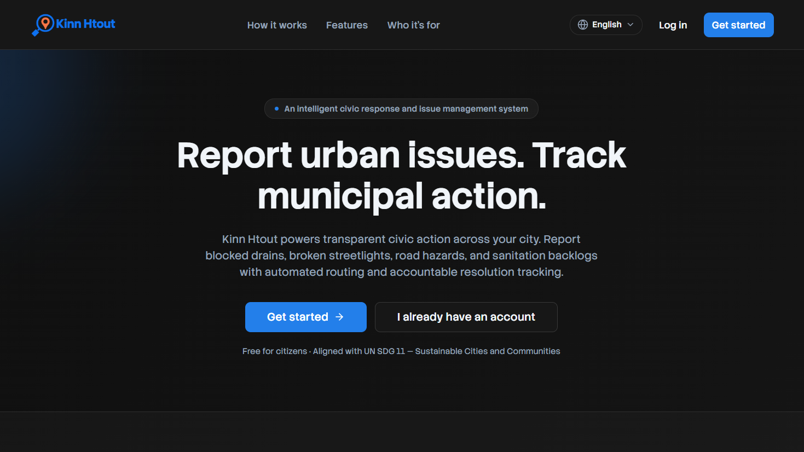
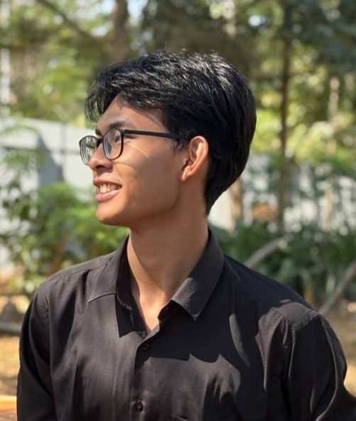
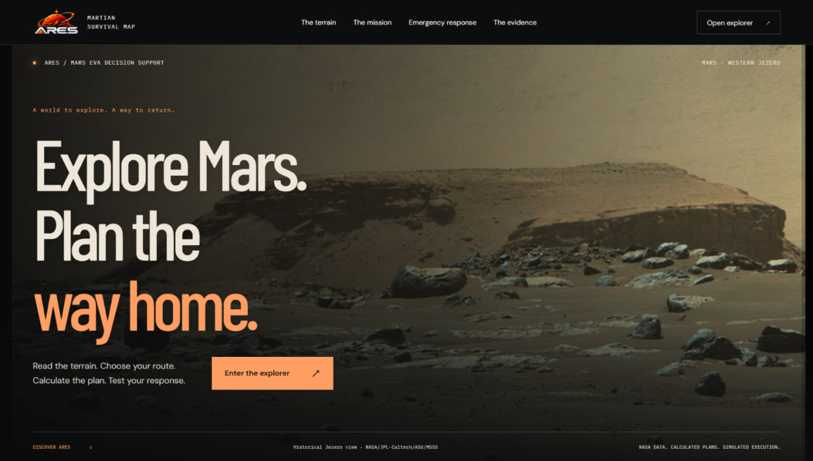
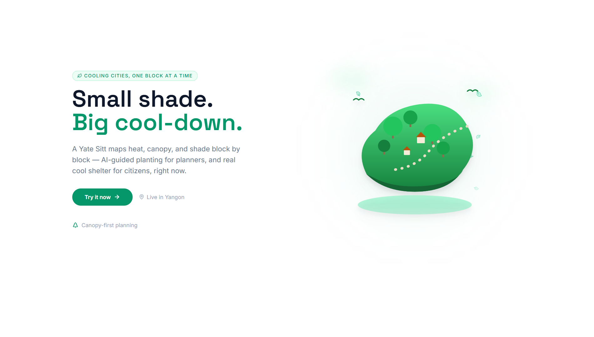
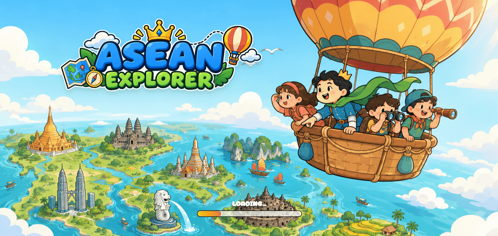

Civic technology · 2026
Kinn Htout
A civic reporting platform connecting community issues with municipal teams, from submission to resolution.
Tech stacks
React 18JavaScriptViteTailwind CSSshadcn/uiLeafletRechartsAxiosjsPDFVitest
Hi, I’m Hamriley
Full Stack Developer & Project Lead
Software Engineering Student · UIT, Yangon
I turn real problems into useful software—designing systems, building across the stack, and guiding teams from idea to implementation.
Explore my work
Selected work
Community problems. New frontiers.
A few ideas I’ve helped bring to life.

A civic reporting platform connecting community issues with municipal teams, from submission to resolution.

A Mars exploration prototype bringing terrain visualization, route planning, and emergency simulation into one workspace.

A heat safety prototype designed around cooling locations, personalized guidance, and emergency support.

A playful geography learning app with interactive maps, quizzes, and a Prolog reasoning engine.
All project previews use supplied project images.
More on GitHubA little about me
Then figuring out how to build it.
I’m a third year Software Engineering student at the University of Information Technology, Yangon, graduating in 2028. I care about practical solutions, thoughtful system design, and interfaces that feel intentional.
I work across development and project planning: proposing ideas, shaping useful features, dividing the work, and building with my team. Agentic tools are part of that process.
I’m also a Working Group Member at MCPA Yangon.
Full stack development · System design · Product ideation · Project planning · Team coordination · Rapid prototyping
Also used in agent-assisted projects: Next.js.
Experience & milestones
Worked with a seven-person UIT student team on a confidential Myanmar market analysis platform. Built experience in Git workflows, agentic development, and collaborative product delivery.
Built the frontend for AI OS, a daily-task automation prototype. Our team also took second place in the event’s IT quiz.
Frontend developer for A Yate Sitt with team Urban Guardians.
Top five national finalist in the University Level competition, creating video content to raise cybersecurity awareness.
Rapidly developed a Myanmar fire-data MVP using MODIS and VIIRS observations during a four-hour practice round.
Kinn Htout was selected to represent Myanmar in Digital Innovation. ASEAN judging results are pending.
Combined full stack development and project management on a warehouse exception-handling prototype, with intensive learning in UX, business planning, and pitching.
System development and project management for ARES: Martian Survival Map.
Curriculum vitae
Backend architecture, REST APIs, and full-stack product delivery.
Third-year Software Engineering undergraduate at UIT with paid frontend development experience, full-stack Spring Boot academic projects, and award-winning hackathon delivery. Focused on backend architecture, REST APIs, and scalable web applications; seeking a Junior Backend Engineer or Full-Stack Developer role.
Bachelor of Computer Science (B.C.Sc.) — Intended Specialization: Software Engineering
Confidential Market Intelligence Platform
Project Manager & Full-Stack Developer · Year-End Project · Myanmar Representative, ASEAN Digital Awards 2027
Frontend Developer & Ideation Contributor · UIT Innovative Hackathon 2026
Have something in mind?